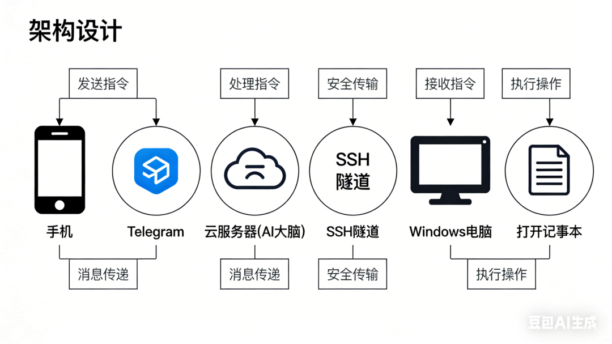
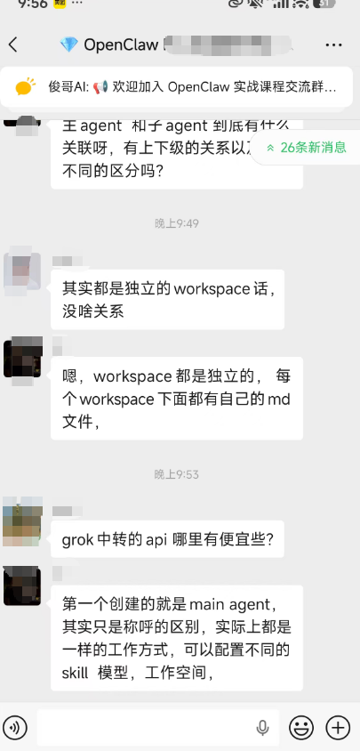

说个事儿。
我最近一直在折腾一个叫 OpenClaw 的东西。
它是啥呢？简单说，就是一个开源的AI助手框架，你可以把 Claude、GPT 这些大模型，接到你的微信、Telegram、QQ、飞书、企微上。
然后它就变成了你的私人AI助手。
7×24小时在线那种。
听着好像没啥特别的对吧？市面上一堆套壳ChatGPT的产品。
但 OpenClaw 有个东西，让我直接起飞了。
它能远程控制你的电脑。
对，你没看错。
我在手机上跟它说"帮我打开桌面上那个文件"，它真的就把我 Windows 电脑上的文件打开了。。。
卧槽。
这个体验。。。怎么说呢。。。
就像你雇了一个24小时在线的远程助理，它不仅能跟你聊天、帮你搜东西、帮你写代码，还能直接操作你的电脑。
好，废话不多说，直接上干货。 链接我进几百人OpenClaw交流群

三种部署方式，你选哪个？
OpenClaw 的部署方式其实就三种，我一个一个说。
第一种：本地部署
最简单，三行命令：
npm i -g openclaw
openclaw setup
openclaw gateway完事了。
你的电脑上就跑起来了一个 AI 助手。
适合谁？ 想体验一下、开发调试用的。
缺点？ 你电脑一关，它就没了。
就像你雇了一个员工，但这个员工只在你开着电脑的时候上班。
那不就是个兼职嘛。。。
我要的是全职啊。
第二种：云端部署
买一台云服务器，把 OpenClaw 装上去。
我用的是腾讯云，一台轻量服务器，一年几百块。
ssh root@你的服务器IP
npm i -g openclaw
openclaw setup
openclaw gateway start这样它就 7×24 在线了。
你把 Telegram Bot、QQ 机器人、企业微信、飞书全接上去，随时随地跟它聊。
凌晨3点给它发消息，秒回。
不请假、不摸鱼、不抱怨。
完美。
但是，有个问题。
它只能在服务器上干活。
服务器是 Linux 系统，它能帮你跑脚本、搜东西、写代码、部署网站。
但它碰不到你的电脑。
你说"帮我看看桌面上的文件"，它说"我看不到"。
这就很蛋疼了。
因为我的日常工作，很多都在 Windows 电脑上——文档、代码、各种本地工具。
如果 AI 助手只能活在服务器上，那它就只是个"云端脑子"，没有"手脚"。
所以，就有了第三种方式。
第三种：混合部署（重点来了）
云端当大脑，本地当手脚。
这个才是我目前在用的，也是我觉得最牛的架构。
简单说就是：
云服务器上跑 Gateway（大脑），接所有聊天渠道 Windows 电脑上跑 Node（手脚），执行本地操作 两者通过 SSH 隧道打通
你在 Telegram 上跟 AI 说"帮我打开记事本"，消息先到云服务器，云服务器再把指令发给你的 Windows，Windows 就真的把记事本打开了。
这个链路你品品：
手机 → Telegram → 云服务器(AI大脑) → SSH隧道 → Windows电脑 → 打开记事本

骚不骚？骚。
下面我手把手教你怎么搞。
混合部署完整教程
前提条件
你需要：
第一步：Windows 上安装 OpenClaw
打开 PowerShell：
npm i -g openclaw如果你还没装 Node.js，先去 nodejs.org 下载 LTS 版本装上。
第二步：查你的 Gateway Token
这个 Token 是你 Windows 连接云服务器的"钥匙"。
在云服务器上，配置文件在 ~/.openclaw/openclaw.json，里面有一行：
"auth": {
"token": "你的token在这里"
}记下来，等下要用。
第三步：建 SSH 隧道
这一步是关键。
因为云服务器上的 Gateway 默认只监听本地端口，外面连不上。所以我们需要用 SSH 隧道把它"引"出来。
在 Windows PowerShell 里执行：
ssh -N -L 18790:127.0.0.1:18789 -p 你的SSH端口 root@你的服务器IP解释一下这行命令：
ssh -N：建立隧道，不执行远程命令 -L 18790:127.0.0.1:18789：把本地 18790 端口映射到服务器的 18789 端口 -p 你的SSH端口：SSH 端口，默认是 22，如果改过就填改后的 root@你的服务器IP：你的服务器地址
执行后它会让你输密码，输完之后。。。
屏幕上啥也没有。
别慌，这是正常的。ssh -N 就是这样，没有输出 = 隧道建立成功。
这个窗口不要关！一关隧道就断了。
第四步：启动 Node 连接
另开一个新的 PowerShell 窗口（注意，是新的窗口，别关上一个），执行：
$env:OPENCLAW_GATEWAY_TOKEN="你的gateway token"
openclaw node run --host 127.0.0.1 --port 18790 --display-name "我的Windows"如果看到类似这样的输出：
🦞 OpenClaw 2026.x.x — Your messages, your servers, your control.
node host PATH: C:\Users\...恭喜，连上了。
第五步：审批配对
第一次连接需要在服务器端审批。
服务器上执行：
openclaw devices list你会看到一个 pending 的设备请求，审批它：
openclaw devices approve 请求ID第六步：配置执行权限
默认情况下，OpenClaw 出于安全考虑，每次在你电脑上执行命令都需要审批。
如果你信任这个连接（毕竟是你自己的电脑），可以直接开放权限：
在 Windows 上执行：
openclaw approvals allowlist add "cmd.exe"
openclaw approvals allowlist add "powershell.exe"
openclaw approvals allowlist add "notepad.exe"或者更粗暴一点，在服务器端直接设置全放行。
第七步：配置 Gateway 指向 Node
在服务器上，告诉 Gateway "以后执行命令默认走 Windows"：
这一步可以通过修改配置实现，在 openclaw.json 的 tools 里加上：
"exec": {
"host": "node",
"node": "我的Windows",
"security": "full"
}重启 Gateway 生效。
第八步：验证
现在，在 Telegram 上跟你的 AI 助手说：
"帮我打开记事本"
如果你看到 Windows 电脑上弹出了记事本。。。
那就成了。
你的 AI 助手，正式拥有了"手脚"。
踩坑记录（血泪经验）
别看上面写得很顺，我搞的时候踩了一堆坑，给你们提前避雷：
坑1：openclaw node pair 不存在
我一开始傻乎乎地执行 openclaw node pair，结果报错 "unknown command"。
正确的命令是 openclaw node run。pair 是老版本的命令，现在已经没了。。。
坑2：SSH 隧道输密码时没有任何显示
输密码的时候屏幕上一个字符都不显示，我以为键盘坏了，反复输了好几遍。
这是 Linux 的安全机制，密码不回显，盲打就行。
坑3：Gateway 重启后 Node 连接会断
每次改配置重启 Gateway，Windows 那边的连接就断了，必须重新执行 SSH 隧道 + node run。
所以改配置的时候要想好了再改，别没事就重启。。。
坑4：权限审批的坑
Windows 上加了白名单，服务器端还是报 "approval required"。
原因是 Gateway 端也有自己的安全策略，两边都得放行才行。
最终解决：服务器端配置 security: "full"，Windows 端白名单设为 *。
坑5：中文乱码
用 cmd.exe 执行 dir 命令，返回的中文全是乱码。
解决方案：用 PowerShell 代替 cmd，并且加上 [Console]::OutputEncoding = [System.Text.Encoding]::UTF8。
这套架构到底有多爽？
说几个我实际在用的场景：
1. 远程查文件
出门在外，突然想看电脑上某个文档，直接 Telegram 问 AI："帮我看看桌面上的那个 txt 文件写了啥"。
它直接把文件内容读出来发给我。
不用远程桌面，不用 VPN，不用开电脑。
2. 远程管理服务器
AI 既能操作云服务器（它本身就跑在上面），又能操作我的 Windows，等于同时管两台机器。
"帮我看看服务器的磁盘空间" —— 直接查
"帮我看看 Windows 上 Docker 跑了几个容器" —— 也能查
一个入口，管所有机器。
3. 跨平台协作
我在 Telegram 上说"把这段代码部署到 Cloudflare"，AI 在服务器上帮我执行部署。
然后我说"帮我在 Windows 上用浏览器打开看看效果"，它又跑到 Windows 上打开浏览器。
这个来回切换的感觉。。。真的像有一个全能助理坐在那里。
最后说点掏心窝的
很多人觉得 AI 助手就是个聊天机器人，问一句答一句，跟搜索引擎差不多。
我之前也这么觉得。
直到我把它部署成"云端大脑 + 本地手脚"的混合架构之后，我才真正理解了一件事：
AI 助手的价值，不在于它多聪明。
而在于它能触及多少东西。
当它只能聊天的时候，它就是个聊天工具。
当它能访问你的文件、操作你的电脑、管理你的服务器、帮你部署代码的时候——
它就是一个真正的员工。
一个 24 小时在线、不请假、不摸鱼、随叫随到的员工。
而这一切的成本，就是一台云服务器的钱。
一年几百块。
你去招个实习生试试？

如果这篇文章对你有帮助，点个赞再走呗。
有问题评论区见，我看到都会回。